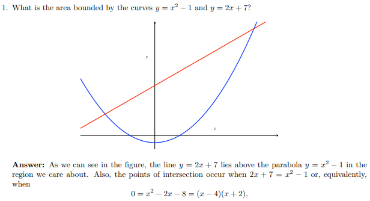
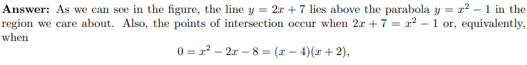
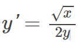
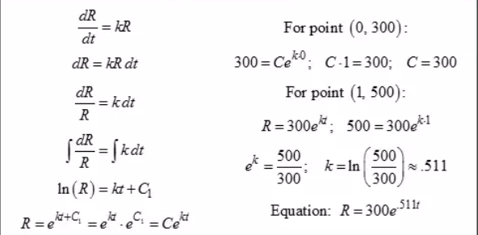

Integrals are also used in measuring the area between two curves. We take the intral from the points where they intersect and that intgral will find you the area between your graph. You can also measure it with area under under the graph to the axis
Ex:

Ans:

Ex:
Solve the differential equation
Ans:
Ex:
The rate of change of R with respect to t is proportional to value R
When t=0, R=300 and when t=1. r=500
write and solve the differential equation that models this situation.
Ans:
